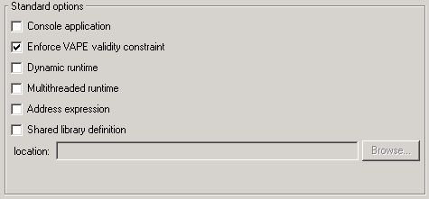
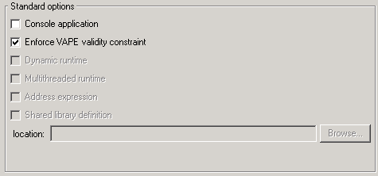
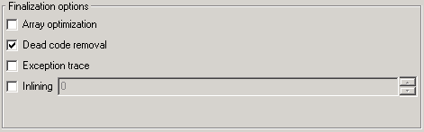

Advanced
Here you can select the most advanced options of your project.
Here is how it looks like for the calculator example:

Global Setting
As you might have notice, the project settings is a simple facade to the Ace
file. Every modification that is done in this window is saved in the
Ace file of your project. Since it is just a facade, it does not provide all the
available options in
the Ace file, but just the most common.
If you want to edit the current settings, simply click on the Edit button. It
will edit your Ace file in the external
editor you have selected in the preferences. The project settings window
will automatically vanish, to make sure there will not conflicts between its
contents and the modified Ace file.
If you decide to change your Ace file, simply click on the `Load from...'
button, a standard open file selection dialog will popup and you can choose a
new Ace file. If the Ace file is invalid, a warning dialog will appear and
the Ace file change will not be taken into account. If the Ace file is valid,
the project settings tab will be updated with the new values extracted from the
Ace file.
If you want to redo your Ace file, you can click on the Reset button. This
will clear all settings to their default values and delete the list of included
clusters. No warning is displayed so make sure you know all the consequences of
doing so.
Standard options
For a project using the standard C compilation generation, here is what you
can select:

- console application:
has no effect on Unix systems. It lets Windows users choose between creating a console application or a
GUI application (in which case a console will be created if needed,
instead of using the console the program was launched from).
- Enforce VAPE validity constraint: lets you disable type checking for VAPE errors in preconditions,
which correspond to insufficiently exported features used in
preconditions (ETL 2nd edition page 122).
- Dynamic runtime: makes the generated executable use a shared library version of the runtime on both
Windows (DLL) and Unix platforms (.so) that supports shared libraries.
Note: On Windows, the dynamic run-time is available only if you
compile with the Microsoft Visual compiler.
- Multithreaded runtime: generates a multithreaded application. This option
cannot be changed during the development of your project and has to
be set correctly at the first compilation of your system.
- Address expression: lets you pass `$(s.to_c)' to a feature instead of
declaring `a' of type ANY, and then assigning `s.to_c'
to `a' and passing `$a'. Turn this option on only if you have
advanced knowledge of the garbage collector insides, since using
this syntax illegally can lead to bugs very hard to trace.
- Shared library definition: lets you specify a `file_name.def'
as the file where the Eiffel compiler will look when it tries to generate
the exported functions of the shared library you are developing. To
have more information concerning definition files, see the
Dynamic library builder reference.
For a dotnet system, only the first two are available, and thus you get:

Finalization options
This is only active for project using the standard C compilation generation.
Here is what you can select:

- array optimization:
enables array optimization which increases performance of array
computation in loops. It is enabled only if arrays are used as local
variables or arguments of an Eiffel feature.
- dead code removal: avoids generating the
C code for Eiffel routines that are not called in your code, and
thus reduces the size of the generated application.
- exception trace: makes it possible to see a complete
exception trace when your finalized application is crashing. Because
it is adding some code to remember where the application was during
the crash it can slow down the performance of your application by a
factor of 5% to 30% depending of your platform.
- inlining: enables inlining on Eiffel features that can be
inlined, i.e. whose size is less or equal to the specified size in
the combo box. The size value given in parameter corresponds to the
number of instructions as the Eiffel compiler sees them (for example
a := b.f corresponds to 2 instructions for the Eiffel compiler). The ISE Eiffel inlining is very
powerful since it can inline a function in all your Eiffel code,
without scope limitation as in C or C++ compilers.